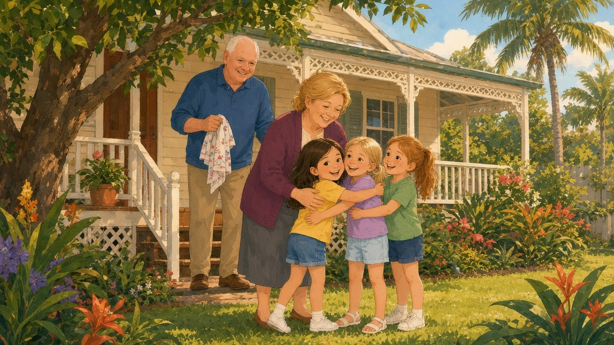

A HushScrolls storybook
Shayla and the Cowden Treasure

At Nana and Poppy’s weatherboard house in Hervey Bay, the afternoon light turns soft and golden — and the old floorboards remember more than anyone realised.
Join Shayla, Olivia and Isabella as they follow quiet Cowden marks, verandah shadows and a palm-tree clue through a warm family mystery. Two chapters are ready to read; more are on the way.